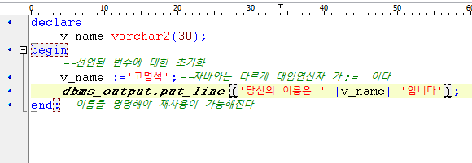

서브쿼리 전체범위 처리를 부분범위처리로 바꿔줄때
간접적인 조건을 주고 처리
인라인뷰 일량을 줄일때. 필요한 정보만을 뽑을때.
RDBMS단점 테이블의 갯수가 많다.
이퀄조인 PK와 FK를 거는게 가장 기본
grant create view to scott;
뷰 만드는 권한 주는 쿼리문


프로시저가 성공적으로 만들어졌다.

DBMS Output 클릭 밑에 있음


SQL> exec proc_test('고양이')
당신의 이름은 고양이입니다
PL/SQL 처리가 정상적으로 완료되었습니다.
SQL> variable msg varchar2(200);
SQL> exec proc_test('나일등',:msg);
당신의 이름은 나일등입니다
PL/SQL 처리가 정상적으로 완료되었습니다.
SQL> print msg;
MSG
--------------------------------------------------------------------------------
정상적으로 처리 되었습니다
SQL>
사용자로부터 아이디와 비번을 입력받아서 회원집합에서 조회를 하고 존재할 경우 그 이름을 변수에 저장한다
select 컬럼명 INTO 변수명
from 회원집합
where 아이디=사용자가 입력한 아이디
and 비번 = 사용자가 입력한 비번
프로시저에서 파라미터 사용하기
create or replace procedure 프로시저이름(변수명 in)
is
선언부
degin
--프로그램 코딩부(제어문,dml구문 사용가능)
end;
파라미터는 총 3개가 필요함
첫번째는 아이디
입력받을 값이니까 in속성으로 정의
두번째는 비번
입력받을 값이니까 in 속성으로 정의
세번째는 출력할 메시지
로그인한 결과를 내보낼 메시지니까 out속성으로 정의
grant create session to 계정 whth admin option;